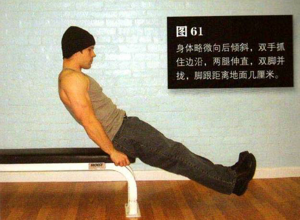
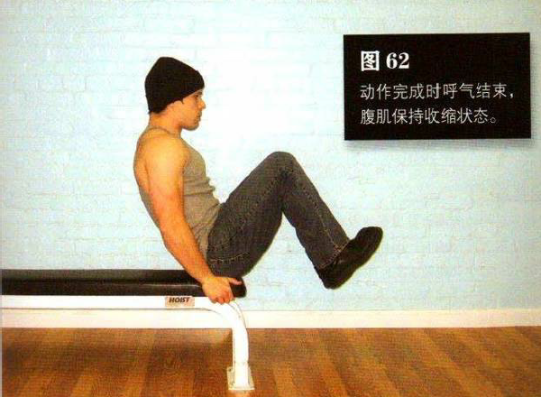

坐在椅子或床的边缘，身体略微向后倾斜，双手抓住边沿，两腿伸直，双脚并拢，脚跟距离地面几厘米。
平缓地抬起膝盖，直到膝盖距胸部约 15一 25 厘米。在此过程中呼气，动作完成时呼气结束，腹肌保持收缩状态。这是该动作的结束姿势（图 62）。暂停 1 秒钟，进行反向运动并回到起始姿势。伸展膝盖的同时吸气。双脚应该始沿着一条直线移动，而且始终保持悬空，直到一组动作完成方可接触地面。腹部要始终收缩，动作要慢，要抵制快速完成动作的冲动。如果需要，可以在两次动作之间喘几口气。
初级标准：1 组，10 次
中级标准：2 组，各 25 次
高级标准：3 组，各 40 次